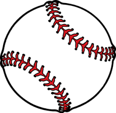
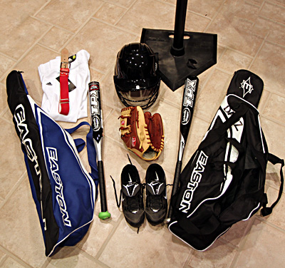
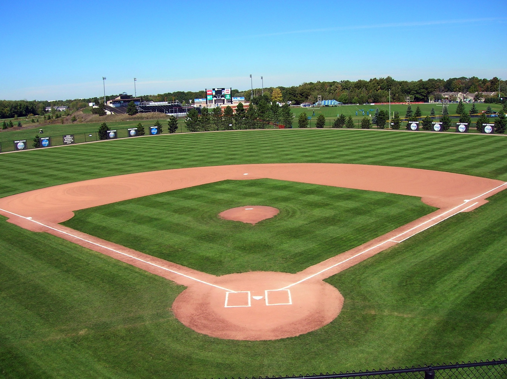
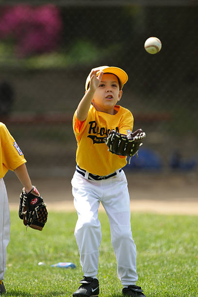
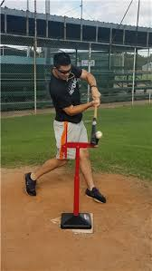
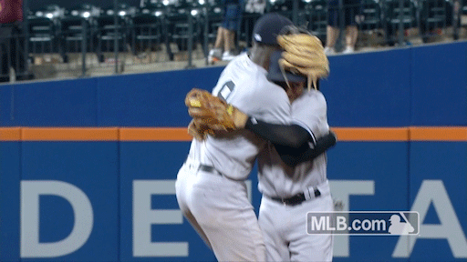

Welcome to this tutorial on how to play baseball!
Today you will learn how to throw, catch, and hit in simple steps.

Click on the baseball to start!
-
Step 1: Equipment
The first step in learing to play baseball is gathering the right equipment. You will need a glove, bat, and baseball to start. The glove and the bat are based upon size specifications, the glove your hand and the bat your height and strength, so make sure you purchase the equipment that feels the most comfortable. All of this equipment can be found at your local sporting goods store at any time throughout the year.
-
Step 2: Find a Practice Field
Most towns usually have a recreation field containing a baseball diamond. For most people under 12 or 13, a smaller diamond with the pitchers mound 50 feet away from home plate and the bases 70 feet apart is most suitable. For players over those ages, a 60/90 field is most suitable, since that is the field the pros play on! If you cannot find a baseball field, at least try to find some open space, away from any property.
-
Step 3: Throwing

When throwing, be sure that you are on flat ground. Make sure your glove is on the opposite of your throwing hand. In the act of throwing, step towards your target, pointing your shoulder towards them as you wind up with the ball in hand. As you throw, continue to make eye contact with the target, and release the ball in an overhand motion, with your arm at a 90 degree angle. Be sure not to release the ball too early or too late or you will miss your target.
-
Step 4: Catching
Catching may not seem hard, but it requires a lot of focus and coordination. Just like the thrower, you must always keep eye contact with your partner. Know when they are throwing the ball and make sure to give them an actual target to throw to. Don't make the target too unattainable to reach. Keep the glove straight on pointed towards the target. When the ball comes, adjust your glove accordingly to catch it. When the ball is secured, make sure the glove is closed at the opening so the ball doesn't fall out.
-
Step 5: Batting
Batting requires more instruction than throwing and catching, and more than can be given in a brief paragraph, so we will just go over the basics. Make sure you have a batting helmet on your head at all times. Step into the batters box that correlates with your dominant position(left, right, or more rarely, switch). Keep your hips square and legs parallel towards home plate. Keep eye contact with the pitcher until the ball comes. When the ball comes, swing your hips through towards the mound and swing to attempt to hit the ball.
Thank you for visiting this tutorial. Now get outside and play!
Come back if you want to teach a friend! 